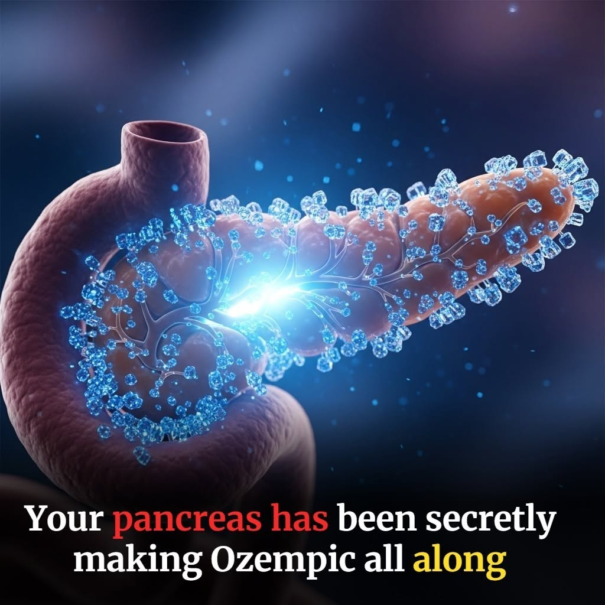

The alpha cells in your pancreas make GLP1.
#glp1HD #pancreasHD
Your pancreas has been secretly making Ozempic all along
Duke University scientists have discovered that pancreatic alpha cells, long believed to only produce glucagon, actually generate powerful amounts of GLP-1 — the same hormone mimicked by popular diabetes drugs like Ozempic and Wegovy. This groundbreaking discovery means your body has been producing its own version of the billion-dollar weight loss drug all along.
For decades, scientists thought alpha cells in the pancreas only made glucagon, a hormone that raises blood sugar. But this new research reveals these cells are actually dual-function powerhouses, simultaneously producing GLP-1, the appetite-suppressing hormone that pharmaceutical companies have been trying to replicate.
This discovery could revolutionize diabetes and obesity treatment. Instead of injecting synthetic versions of GLP-1, future therapies might focus on boosting your pancreas's natural production. The implications extend beyond weight loss – understanding how our bodies naturally regulate appetite could lead to treatments that work with, rather than against, our biological systems.
The research suggests that some people might naturally produce more GLP-1 than others, potentially explaining why some individuals maintain healthy weights more easily. This could lead to personalized medicine approaches, where treatments are tailored based on individual GLP-1 production levels.
Source: Duke University via ScienceDaily
#Ozempic #GLP1 #PancreasResearch #DiabetesBreakthrough #WeightLoss #Endocrinology #MedicalDiscovery #BiologyNews #HealthScience #Hormones
